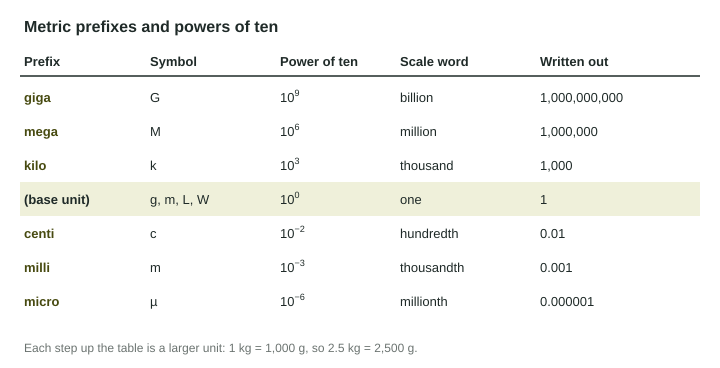

Scientific Notation and Metric Prefixes
Scientific notation writes very large and very small numbers as a number from 1 to 10 times a power of ten, such as 2.5×10⁶ = 2.5 million = 2,500,000.
Part 1 · Hook
Why this matters
Part 2 · Prerequisite check
Quick check before you start
1. Which is an abiotic factor of an ecosystem?
- The amount of rain
- A fungus
- A bird
- A tree
Show the answer
Rain is nonliving.
- Correct: The amount of rain:
- A fungus:
- A bird:
- A tree:
2. Which biome is warm all year and very wet?
- Tropical rainforest
- Tundra
- Savanna
- Desert biome
Show the answer
Warm and wet all year is a tropical rainforest.
- Correct: Tropical rainforest:
- Tundra:
- Savanna:
- Desert biome:
Part 3 · See it
See it first

Part 4 · Step by step
How it works, step by step
- Move the decimal point until one nonzero digit is left of itthe front number is between 1 and 10
- Count the places you moved itthat count is the exponent: left gives a positive power, right a negative one
- Multiply numbers in scientific notationmultiply the front numbers and add the exponents
Part 5 · Key ideas
Key ideas
- Scientific notation writes a number as (a number from 1 to 10) × a power of ten: = 2.5 million = 2,500,000.
- Multiply: multiply the fronts, add the exponents. Divide: divide the fronts, subtract the exponents. Then fix the front number if it is not between 1 and 10.
- A metric prefix is a power of ten: kilo (), mega (), giga (), centi (), milli (), micro ().
- Scale words: thousand = , million = , billion = , trillion = .
Part 6 · Misconception
A common mistake
The wrong idea: When you multiply by , you multiply the exponents to get .
What actually happens: Multiplying powers of ten adds the exponents: . Check with numbers: 10,000 × 1,000 = 10,000,000, which has 7 zeros.
Part 7 · Check yourself
Check yourself
Exam-style questions. Anything you miss goes into your review queue.
1. How is 4,300,000 written in scientific notation?
Show the answer
Move the decimal point 6 places left to get a number from 1 to 10: .
- Correct: : Right: 4.3 is between 1 and 10, and the point moved 6 places.
- : Equal in value, but 43 is not between 1 and 10, so it is not scientific notation.
- : That is 430,000; the point moved 6 places, not 5.
- : Equal in value, but 0.43 is less than 1, so it is not scientific notation.
2. A forest stores kg of carbon on each of its hectares. How many kilograms of carbon does the whole forest store?
Type a number, then its unit (kg). Scale words (2.5 million) and powers of ten (2.5 × 10^6) are read.
Show the answer
Multiply the front numbers and add the exponents:
- Answer: 60,000,000 kg
3. A lake holds 750 ML (megaliters) of water. How many liters is that?
- L
- L
- L
- L
Show the answer
Mega means : L.
- Correct: L: Right: 750 million liters.
- L: That treats mega as kilo ().
- L: That is 750 L; the prefix was ignored.
- L: That treats mega as giga ().
4. A landfill receives kg of trash a day. Write the setup for how much it receives in 30 days, with units, then give the answer.
Type the setup as on the exam, with brackets and units, then the answer.
Show the answer
- Setup: ; answer 12,000,000 kg
Data
Water use in three cities
| City | Population | Water use per year (liters) |
|---|---|---|
| North Falls | 2.0 × 10⁵ | 1.2 × 10¹⁰ |
| Lake City | 1.5 million | 9.0 × 10¹⁰ |
| Pine Hill | 40,000 | 3.2 × 10⁹ |
5. Which city has the largest population?
- North Falls
- Lake City
- Pine Hill
- North Falls and Lake City are tied
Show the answer
Write them the same way: North Falls 200,000; Lake City 1,500,000; Pine Hill 40,000.
- North Falls: is 200,000, less than 1.5 million.
- Correct: Lake City: Right: 1.5 million = 1,500,000.
- Pine Hill: 40,000 is the smallest.
- North Falls and Lake City are tied: 200,000 and 1,500,000 are not equal.
6. How many liters of water does Lake City use per person each year?
Type a number, then its unit (L/person/yr). Scale words (2.5 million) and powers of ten (2.5 × 10^6) are read.
Show the answer
1.5 million = .
- Answer: 60,000 L/person/yr
7. How many times more water does Lake City use in a year than North Falls?
Type a number, then its unit (times). Scale words (2.5 million) and powers of ten (2.5 × 10^6) are read.
Show the answer
- Answer: 7.5 times
Part 8 · Summary
Summary
Part 9 · Up next
What comes next
Part 10 · Connections